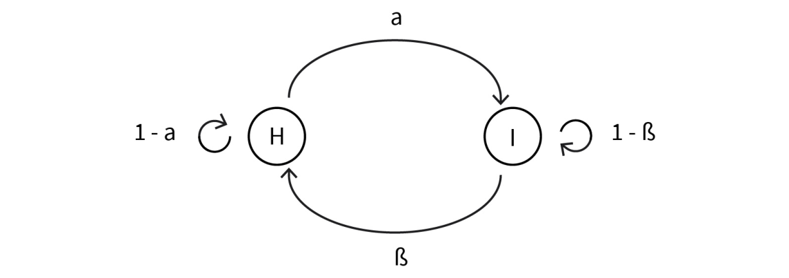

DLMAIRIL01 - Source-derived printable review sheet
Condensed from the same learning note. No additional teaching topics or official examination questions. Formulas and fonts render offline.
A dynamic-programming model must specify its information, admissible decisions, transitions, lifetime and cost aggregation; the Markov property permits state-based recursion, and a fixed MDP policy induces a Markov chain.
| Term | Meaning |
|---|---|
| Support | Set of possible values of a random variable. |
| Conditional probability | Probability of one event given another event has occurred. |
| Dummy action | A zero-cost terminal action used to complete a model representation. |
| Time homogeneity | Transition and cost rules do not change with the stage. |
| Accrual method | Rule combining stage quantities into the performance criterion. |
| Minimax / maximin | Minimize the largest cost / maximize the smallest reward. |
| History | Information recorded from previous states and actions. |
| Markov chain | A stochastic state sequence with memoryless transitions. |
| MDP under a fixed policy | A Markov chain whose transition matrix is induced by the selected actions. |
For a fixed policy and additive discounted stochastic costs:
Specify state, admissible action, cost, transition, lifetime and accrual rule before optimizing. A fixed MDP policy induces .
The three-coin example has probabilities 1/8, 3/8, 3/8 and 1/8 for zero through three heads. Knowing that the head count is odd restricts the relevant outcomes to one or three heads; the probability of three heads becomes (1/8)/(3/8+1/8)=1/4.
Study these with the detailed explanation in the linked Obsidian note.

Answer before expanding. Open the answers before printing to include them.
All numerical values the random variable can take.
States, admissible actions, cost/reward and a deterministic or stochastic transition rule.
Allow an absorbing zero-cost terminal representation without an empty action set.
Homogeneity concerns whether model rules change by stage; horizon concerns process lifetime.
Remaining time may affect optimal decisions, so the state must contain that information.
It minimizes the worst single-stage cost rather than the sum.
The smallest available-fuel-per-distance margin across missions.
It can increase computational complexity without improving the ideal decision.
Expectation is linear, so expected stage and continuation contributions can be combined.
No; the maximum of expectations generally differs from the expectation of the maximum.
A Markov chain with policy-induced transition probabilities.
One quarter.
Learning note: 02_unit_2_dynamic_programming_and_markov_decision_processes/02_dynamic_programming.
Course book pp. 59-78. Printed page + 2 = PDF viewer page. Personal-study use.